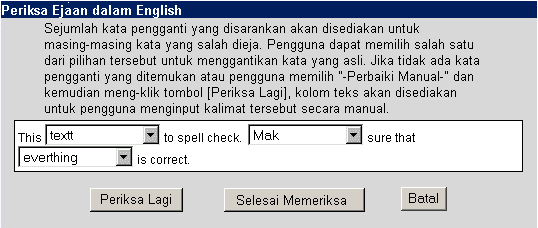

| Anda menulis pesan di dalam kotak teks utama. Sekali anda menyelesaikan pesan anda, anda mungkin ingin memeriksa pesan tersebut untuk memeriksa kesalahan ejaan. Tetapi, melakukan hal tersebut secara manual akan sangat membosankan. Untungnya, Open webmail memiliki Periksa Ejaan sangat luas yang dapat melakukannya untuk anda. Hanya dengan memilih kamus yang anda ingin gunakan bahasa (English, atau American), dan klik tombol "Periksa Ejaan". Ini akan membuka window baru dengan tombol Periksa Ejaan.
Apabila teks pesan adalah:
This textt to spell check. Mak sure that everthing is correct.
Anda akan mendapatkan tampilan periksa ejaan yang sama atau serupa seperti berikut ini:

Kalimat-kalimat yang salah dieja di dalam pesan adalah kalimat-kalimat yang berada di dalam menu pilihan. Untuk mengoreksi kalimat tersebut, klik menu pilihan dari kalimat yang ingin anda perbaiki. Daftar dari kalimat yang diusulkan akan ditampilkan, sama seperti -- Perbaiki Manual -- .
Anda dapat memilih salah satu dari kalimat yang diusulkan, jika kalimat yang anda cari ada di dalam daftar, atau pilih -- Perbaiki Manual -- , apabila kalimat tersebut tidak berada dalam daftar pilihan. Sekali anda sudah menyelesaikannya, klik tombol "Selesai Memeriksa". Maka tampilan layar tersebut akan tertutup, dan kalimat yang sudah anda benarkan akan diubah secara otomatis. Jika anda memilih -- Perbaiki Manual -- , klik tombol "Periksa Lagi", dan anda akan dapat mengetik di dalam area dimana anda salah mengeja kalimat tersebut. Sekali anda sudah memeriksa kalimat tersebut secara manual, anda boleh meng-klik tombol "Selesai Memeriksa" dan kembali ke dalam pesan anda, dan kalimat tersebut sudah dikoreksi. |